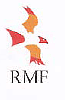

We Do Recycling For Business
(Domestic kerbside, recycling collection) domestic
quantities 2 free crates as a part of our service. Disposal Services Include: electronic
waste-computers monitors, cell phones Toxic materials, mercury, lead etc (not to
be sent to land fills)
Recycling Tips
Households in christchurch and Waimakariri now put out more than 20.000 tonnes
of recyclables each year.
Your efforts ar minimizing waste going to landfill creating millions of dollars worth of
recycled products annually have created over 120 local jobs in the past five years.
Clean
and tidy recyclables at the kerbside make it easier for the collectors and will reduce the risk
of litter on your street.
Wind can blow items from the crate so make sure they're secure-heavier
items on top paper tied in a bag and cardboard tied in a bundle Please squash plastic bottles and
drink cans-it makes more room for you and us.
Loose lids from tied from tin cans sometimes
drop onto the road when the crate is emptied. This can be preserved by pushing your lids inside
the cans and squeezing the top together.
If your Christchurch City Council recycling crate is
regularly overfull or heavy you can get a second crate free from a City Council service Centre.
If you have more recycling than normal, say after a party you can drop it off free at
your local refuse/recycling station or spread it out over several weeks for collection.
